Ghidra MCP on Arch Linux with Claude Code
This tutorial shows how to install and run GhidraMCP on Arch Linux and use it from Claude Code. At the end, we test it by reverse engineering a small crackme that I wrote myself.
Most GhidraMCP guides use Claude Desktop, but there is no official Claude Desktop for Linux, so this guide uses Claude Code (the CLI) instead.
1. How it works
MCP (Model Context Protocol) is a standard way to connect an AI model to external tools. GhidraMCP has two parts:
- Ghidra plugin – runs inside Ghidra and starts a
local HTTP server (default:
http://127.0.0.1:8080). It exposes whatever program is open in the CodeBrowser. - MCP server (
ghidra-mcp) – a Python program that Claude Code launches. It translates Claude’s tool calls into HTTP requests to the plugin.
Claude Code <--MCP (stdio)--> ghidra-mcp <--HTTP :8080--> Ghidra plugin (CodeBrowser)With this, Claude can list functions, decompile and disassemble code, follow cross-references, rename symbols, and so on, directly in your Ghidra session.
2. Prerequisites
- Arch Linux (other distributions work too; only the package commands differ)
- Ghidra 12.1.4 (must match the version of the plugin release)
- Python 3.10 or later
- Claude Code, logged in
3. Install Ghidra
sudo pacman -S ghidraCheck the version under Help > About Ghidra.
Version matters. A Ghidra extension only loads in the exact Ghidra version it was built for. The GhidraMCP 2.0 plugin is built for Ghidra 12.1.4. If your package is older (for example 12.1.2), installing the extension fails with “does not point to a valid ghidra extension”. In that case, update Ghidra or download 12.1.4 from the official releases.
4. Download GhidraMCP
Open the repository at https://github.com/LaurieWired/GhidraMCP and follow the link to the latest release.
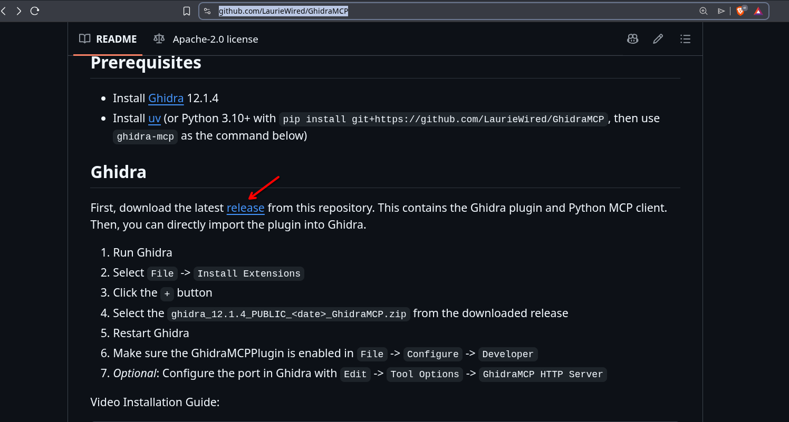
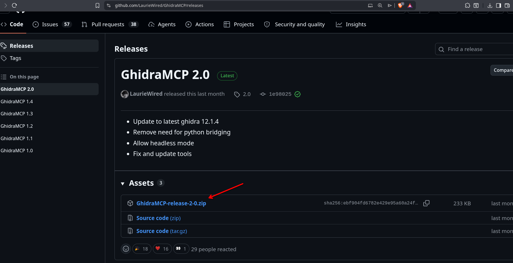
GhidraMCP-release-2-0.zip from
Assets.Unzip it:
unzip GhidraMCP-release-2-0.zip -d GhidraMCP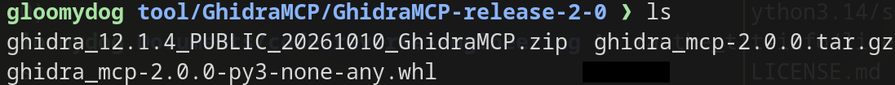
The release contains three files:
| File | Purpose |
|---|---|
ghidra_12.1.4_PUBLIC_20261010_GhidraMCP.zip | The Ghidra extension (plugin) |
ghidra_mcp-2.0.0-py3-none-any.whl | The MCP server as a Python package (used below) |
ghidra_mcp-2.0.0.tar.gz | Source package of the same MCP server (not needed) |
Note: Do not give the outer GhidraMCP-release-2-0.zip to
Ghidra. It is a bundle, not an extension, so Ghidra rejects it. Use the
inner ghidra_12.1.4_..._GhidraMCP.zip.
You do not need git clone. The release already contains
everything you need. Cloning is only needed if you want to build the
plugin from source.
5. Set up the Ghidra plugin
5.1 Install the extension
Open Ghidra and go to File > Install Extensions. Click
the + button and select
ghidra_12.1.4_PUBLIC_20261010_GhidraMCP.zip.
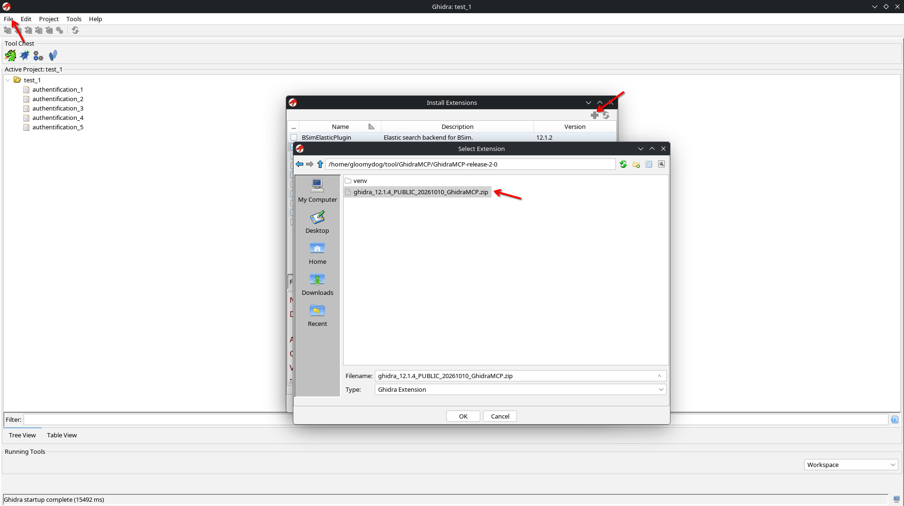
Click OK and restart Ghidra. The extension is loaded only after a restart.
5.2 Enable the plugin in the CodeBrowser
The plugin runs in the CodeBrowser, not in the project window. Click the dragon icon in the Tool Chest to open the CodeBrowser.
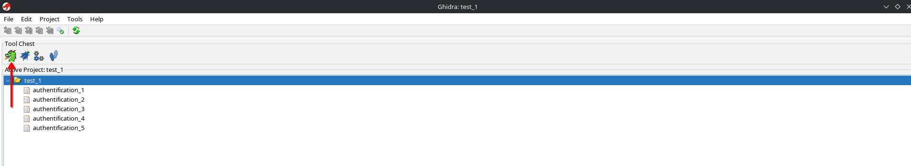
In the CodeBrowser, go to File > Configure and click Configure under Developer.
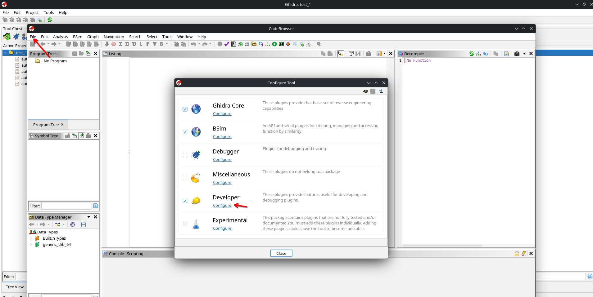
Check GhidraMCPPlugin and click OK.
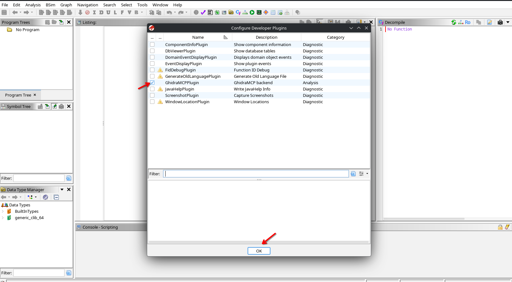
The plugin now starts an HTTP server on port 8080. You only need to do this once; Ghidra remembers the setting. To use another port, go to Edit > Tool Options > GhidraMCP HTTP Server.
You can check that the server is running:
ss -ltnp | grep 8080
curl http://127.0.0.1:8080/If curl returns JSON (even an error such as
"Unknown endpoint: /"), the plugin is working.
6. Set up Claude Code
6.1 Install the MCP server
Go to the GhidraMCP-release-2-0 directory, create a
virtual environment, and install the wheel into it:
cd ~/tool/GhidraMCP/GhidraMCP-release-2-0
python3 -m venv venv && source venv/bin/activate
pip install ghidra_mcp-2.0.0-py3-none-any.whlArch marks the system Python as “externally managed”, so a plain
pip install fails with
externally-managed-environment. A virtual environment
avoids this and keeps the dependencies separate from the system.
Now there is a venv directory. It contains the
installed packages and their command-line scripts.
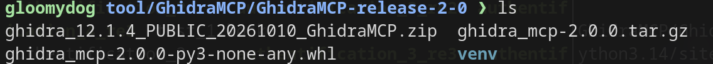
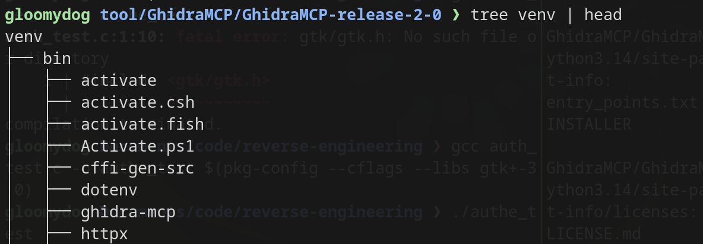
venv/bin contains the
ghidra-mcp command.Check where the ghidra-mcp command was installed:
pip show -f ghidra_mcp | grep -i bin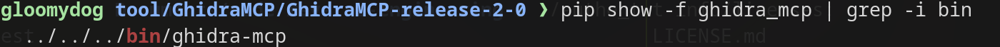
site-packages, so the
command is venv/bin/ghidra-mcp.6.2 Register it with Claude Code
claude mcp add -s user ghidra -- ~/tool/GhidraMCP/GhidraMCP-release-2-0/venv/bin/ghidra-mcpghidrais the name of the server in Claude Code.- Everything after
--is the command that Claude Code runs. Use the full path to the venv binary, so you do not need to activate the venv. -s userregisters the server for your user, so it is available in every directory. Without it, the default scope islocal, and the server is only available in the directory where you ran the command.
If you changed the plugin port, run ghidra-mcp --help to
see how to set the server address, and add that option to the
command.
Check the registration:
claude mcp list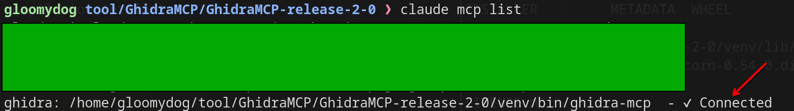
✓ Connected means that Claude Code can start
the MCP server.Note: Connected only means that the MCP server started. It
does not mean that Ghidra is reachable. The tools work only while
Ghidra is running with a program open in the CodeBrowser.
7. Test GhidraMCP
I wrote a small test program, auth_ghidra, in C. It is a
classic “crackme”: a registration window that asks for a name and a
serial number. The goal is to find a valid serial without reading the
source code. The source code is in the
appendix.
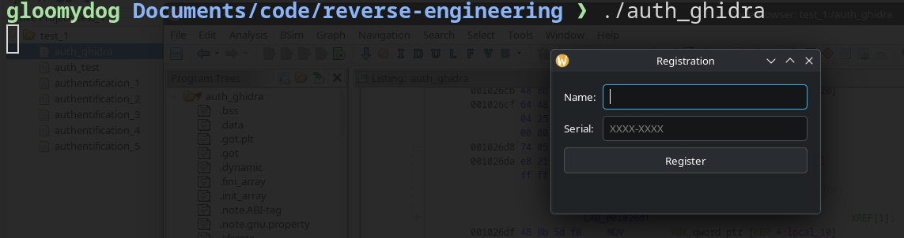
7.1 Open the binary in Ghidra
Create a project in Ghidra, import auth_ghidra
(File > Import File), and open it in the CodeBrowser. When
Ghidra asks whether to analyze the program, click Yes and use
the default options.
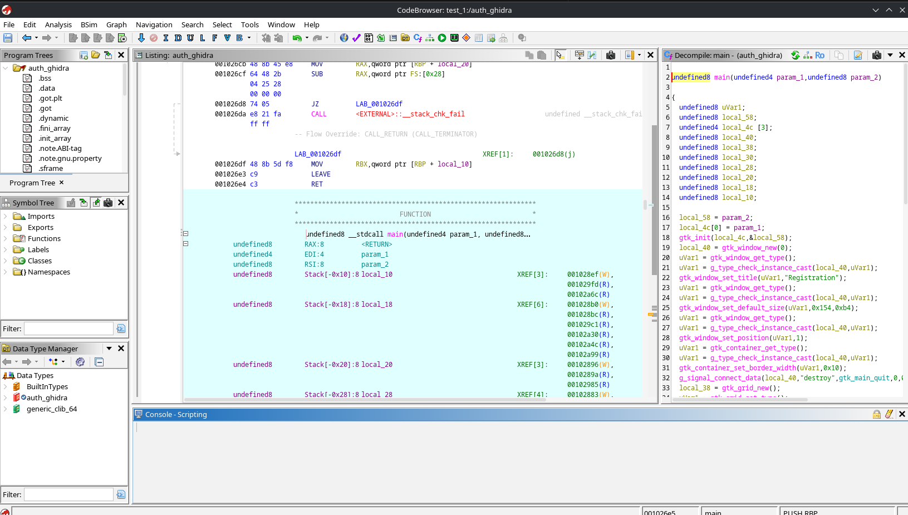
auth_ghidra analyzed in the
CodeBrowser.7.2 Start Claude Code
Start claude in a terminal. Because we registered the
server with -s user, you can start it in any directory. A
dedicated working directory is still a good idea, because Claude can
read and write files there (for example, a keygen script).
Run /mcp to check that the ghidra server is
connected and its tools are loaded.
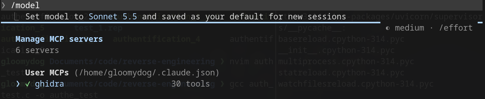
ghidra server is connected with 30
tools.7.3 Ask Claude to analyze the program
Give Claude a prompt such as:
Use Ghidra MCP to analyze auth_ghidra and find how the serial is checked.Claude calls the GhidraMCP tools to list the functions, decompile the registration handler, and work out the serial algorithm.
Note: Some models may refuse a prompt that only says “crack this”. Because this is your own test program, say so in the prompt (for example, “this is my own crackme for practice”) and ask for an analysis of the validation logic. I used Sonnet 5.5 for this test.
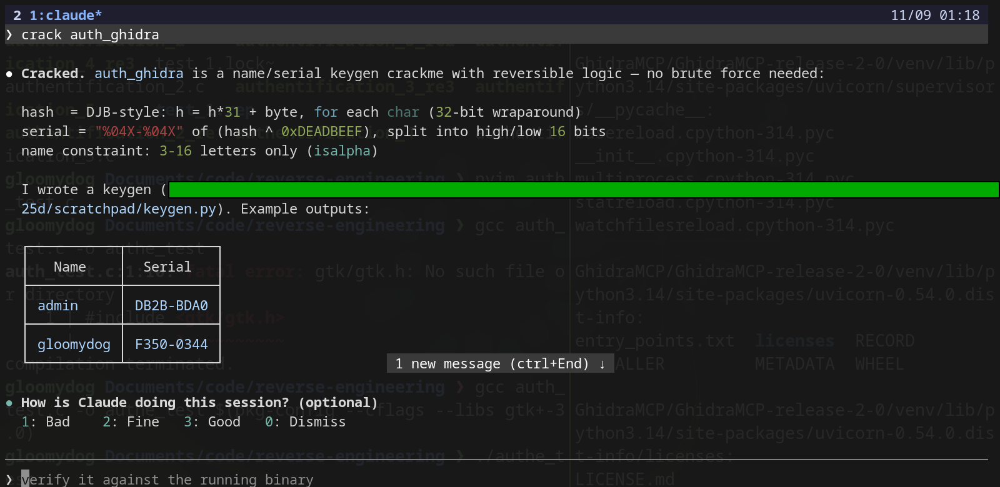
Claude found the following algorithm:
- The name must be 3–16 letters (A–Z, a–z only).
- A hash of the name is computed with
h = h * 31 + cfor each character (32-bit, wrapping). - The hash is XORed with the constant
0xDEADBEEF. - The result is formatted as
%04X-%04X(upper 16 bits, then lower 16 bits).
So each name has exactly one valid serial. Claude gave
DB2B-BDA0 for the name admin.
7.4 Check the result
I entered name admin and serial DB2B-BDA0,
and the registration succeeded.
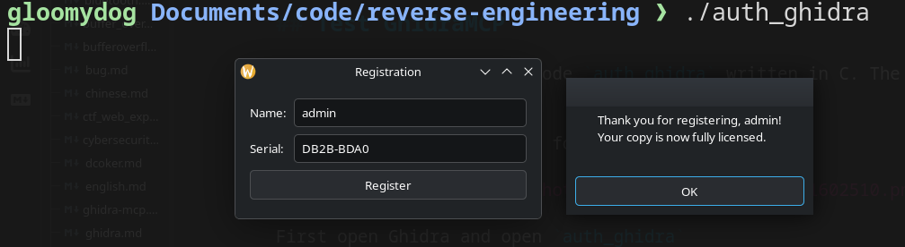
8. Troubleshooting
| Problem | Cause and solution |
|---|---|
| “… does not point to a valid ghidra extension” | You
selected the outer release zip, or your Ghidra version does not match
the plugin. Select the inner
ghidra_12.1.4_..._GhidraMCP.zip and use Ghidra
12.1.4. |
| GhidraMCPPlugin is not in the plugin list | You are in the project window, not the CodeBrowser, or Ghidra was not restarted after installing the extension. |
pip install fails with
externally-managed-environment | Use a virtual environment, as shown in 6.1. |
ghidra is missing in /mcp in some
directories | The server was registered with the default
local scope. Run claude mcp remove ghidra, then
add it again with -s user. |
| Claude says the Ghidra backend is not reachable | Ghidra is
not running, the plugin is disabled, or no program is open in the
CodeBrowser. Check with ss -ltnp | grep 8080 and
curl http://127.0.0.1:8080/. |
| Port 8080 is already in use | Change the port in
Edit > Tool Options > GhidraMCP HTTP Server and give the
same address to ghidra-mcp (see
ghidra-mcp --help). |
Appendix: source code of auth_ghidra
To compile it, install GTK 3 (sudo pacman -S gtk3) and
run:
gcc auth_ghidra.c -o auth_ghidra $(pkg-config --cflags --libs gtk+-3.0)If you see gtk/gtk.h: No such file or directory, GTK 3
headers are missing, or the pkg-config part was left out of
the command.
#include <gtk/gtk.h>
#include <string.h>
#include <ctype.h>
#define MAGIC 0xDEADBEEFu
/* Classic polynomial hash (same idea as Java's String.hashCode) */
static unsigned int compute_hash(const char *name)
{
unsigned int h = 0;
for (const char *p = name; *p; p++) {
h = h * 31u + (unsigned char)(*p);
}
return h;
}
static int valid_name(const char *name)
{
size_t len = strlen(name);
if (len < 3 || len > 16)
return 0;
for (size_t i = 0; i < len; i++) {
if (!isalpha((unsigned char)name[i]))
return 0;
}
return 1;
}
static int check_serial(const char *name, const char *serial)
{
unsigned int expected = compute_hash(name) ^ MAGIC;
char buf[16];
g_snprintf(buf, sizeof(buf), "%04X-%04X",
(expected >> 16) & 0xFFFFu, expected & 0xFFFFu);
return g_strcmp0(buf, serial) == 0;
}
static void show_message(GtkWindow *parent, GtkMessageType type, const char *msg)
{
GtkWidget *dialog = gtk_message_dialog_new(parent, GTK_DIALOG_MODAL, type,
GTK_BUTTONS_OK, "%s", msg);
gtk_dialog_run(GTK_DIALOG(dialog));
gtk_widget_destroy(dialog);
}
static void on_register_clicked(GtkWidget *button, gpointer user_data)
{
GtkWidget **entries = (GtkWidget **)user_data;
GtkEntry *name_entry = GTK_ENTRY(entries[0]);
GtkEntry *serial_entry = GTK_ENTRY(entries[1]);
GtkWindow *window = GTK_WINDOW(gtk_widget_get_toplevel(button));
const char *name = gtk_entry_get_text(name_entry);
const char *serial = gtk_entry_get_text(serial_entry);
if (!valid_name(name)) {
show_message(window, GTK_MESSAGE_WARNING,
"Invalid name. Use 3-16 letters only.");
return;
}
if (check_serial(name, serial)) {
char msg[256];
g_snprintf(msg, sizeof(msg),
"Thank you for registering, %s!\nYour copy is now fully licensed.",
name);
show_message(window, GTK_MESSAGE_INFO, msg);
} else {
show_message(window, GTK_MESSAGE_ERROR, "Invalid serial number.");
}
}
int main(int argc, char *argv[])
{
gtk_init(&argc, &argv);
GtkWidget *window = gtk_window_new(GTK_WINDOW_TOPLEVEL);
gtk_window_set_title(GTK_WINDOW(window), "Registration");
gtk_window_set_default_size(GTK_WINDOW(window), 340, 180);
gtk_window_set_position(GTK_WINDOW(window), GTK_WIN_POS_CENTER);
gtk_container_set_border_width(GTK_CONTAINER(window), 16);
g_signal_connect(window, "destroy", G_CALLBACK(gtk_main_quit), NULL);
GtkWidget *grid = gtk_grid_new();
gtk_grid_set_row_spacing(GTK_GRID(grid), 8);
gtk_grid_set_column_spacing(GTK_GRID(grid), 8);
gtk_container_add(GTK_CONTAINER(window), grid);
GtkWidget *name_label = gtk_label_new("Name:");
gtk_widget_set_halign(name_label, GTK_ALIGN_START);
GtkWidget *name_entry = gtk_entry_new();
GtkWidget *serial_label = gtk_label_new("Serial:");
gtk_widget_set_halign(serial_label, GTK_ALIGN_START);
GtkWidget *serial_entry = gtk_entry_new();
gtk_entry_set_placeholder_text(GTK_ENTRY(serial_entry), "XXXX-XXXX");
GtkWidget *button = gtk_button_new_with_label("Register");
gtk_grid_attach(GTK_GRID(grid), name_label, 0, 0, 1, 1);
gtk_grid_attach(GTK_GRID(grid), name_entry, 1, 0, 1, 1);
gtk_grid_attach(GTK_GRID(grid), serial_label, 0, 1, 1, 1);
gtk_grid_attach(GTK_GRID(grid), serial_entry, 1, 1, 1, 1);
gtk_grid_attach(GTK_GRID(grid), button, 0, 2, 2, 1);
gtk_widget_set_hexpand(name_entry, TRUE);
gtk_widget_set_hexpand(serial_entry, TRUE);
static GtkWidget *entries[2];
entries[0] = name_entry;
entries[1] = serial_entry;
g_signal_connect(button, "clicked", G_CALLBACK(on_register_clicked), entries);
g_signal_connect(serial_entry, "activate", G_CALLBACK(on_register_clicked), entries);
gtk_widget_show_all(window);
gtk_main();
return 0;
}